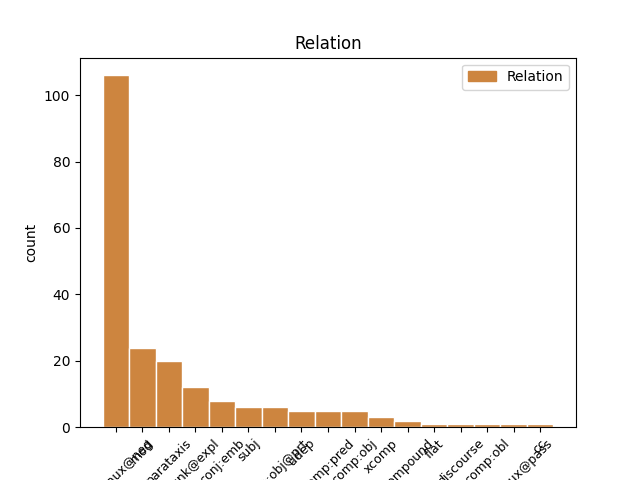
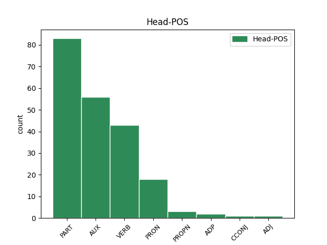
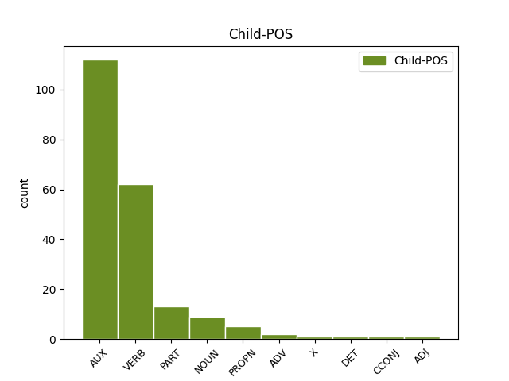

Distribution of features within this leaf



Agreement Rules sorted by frequency.
- When the dependent token is the complement for auxiliary(comp:aux@neg) of the head token, and the head token is PART and the dependent token is AUX.
1 E _ _ _ _ 0 _ _ _
2 1812 _ _ _ _ 0 _ _ _
3 e e PART _ Number=Sing|Person=2 0 _ _ _
4 oa oa AUX _ Number=Sing|Person=2 3 comp:aux@neg _ _
5 rannet _ _ _ _ 0 _ _ _
6 e _ _ _ _ 0 _ _ _
7 3 _ _ _ _ 0 _ _ _
8 arondisamant _ _ _ _ 0 _ _ _
9 : _ _ _ _ 0 _ _ _
1 Konan _ _ _ _ 0 _ _ _
2 a _ _ _ _ 0 _ _ _
3 voe voe VERB _ Gender=Masc|Number=Sing|Person=3|Tense=Past 0 _ _ _
4 kurunennet _ _ _ _ 0 _ _ _
5 e _ _ _ _ 0 _ _ _
6 1048 _ _ _ _ 0 _ _ _
7 ( _ _ _ _ 0 _ _ _
8 ne _ _ _ _ 0 _ _ _
9 oa er VERB _ Mood=Ind|Number=Sing|Person=3|Tense=Imp|VerbForm=Fin 3 parataxis _ _
10 eta _ _ _ _ 0 _ _ _
11 nemet _ _ _ _ 0 _ _ _
12 8 _ _ _ _ 0 _ _ _
13 vloaz _ _ _ _ 0 _ _ _
14 ) _ _ _ _ 0 _ _ _
15 . _ _ _ _ 0 _ _ _
1 Peurvuiañ _ _ _ _ 0 _ _ _
2 e e PART _ Mood=Ind|Number=Sing|Person=3|Polarity=Neg|VerbForm=Fin 0 _ _ _
3 vez vez VERB _ Aspect=Hab|Mood=Ind|Number=Sing|Person=3|Polarity=Pos|Tense=Pres 2 comp:aux@neg _ _
4 notet _ _ _ _ 0 _ _ _
5 « _ _ _ _ 0 _ _ _
6 A _ _ _ _ 0 _ _ _
7 » _ _ _ _ 0 _ _ _
8 an _ _ _ _ 0 _ _ _
9 niver _ _ _ _ 0 _ _ _
10 a _ _ _ _ 0 _ _ _
11 nukleonoù _ _ _ _ 0 _ _ _
12 a _ _ _ _ 0 _ _ _
13 zo _ _ _ _ 0 _ _ _
14 d'an _ _ _ _ 0 _ _ _
15 atomoù _ _ _ _ 0 _ _ _
16 hag _ _ _ _ 0 _ _ _
17 anvet _ _ _ _ 0 _ _ _
18 e _ _ _ _ 0 _ _ _
19 vez _ _ _ _ 0 _ _ _
20 niver _ _ _ _ 0 _ _ _
21 mas _ _ _ _ 0 _ _ _
22 . _ _ _ _ 0 _ _ _
1 Evel _ _ _ _ 0 _ _ _
2 testeni _ _ _ _ 0 _ _ _
3 eus _ _ _ _ 0 _ _ _
4 ar _ _ _ _ 0 _ _ _
5 sevenadur _ _ _ _ 0 _ _ _
6 galian _ _ _ _ 0 _ _ _
7 - _ _ _ _ 0 _ _ _
8 roman _ _ _ _ 0 _ _ _
9 ez _ _ _ _ 0 _ _ _
10 eus _ AUX _ Number=Sing|Person=2 0 _ _ _
11 bet _ _ _ _ 0 _ _ _
12 kavet _ _ _ _ 0 _ _ _
13 ur _ _ _ _ 0 _ _ _
14 villa _ _ _ _ 0 _ _ _
15 bras _ _ _ _ 0 _ _ _
16 awalc'h _ _ _ _ 0 _ _ _
17 e _ _ _ _ 0 _ _ _
18 Kervenenneg _ _ _ _ 0 _ _ _
19 gant _ _ _ _ 0 _ _ _
20 ur _ _ _ _ 0 _ _ _
21 c'hibelldi _ _ _ _ 0 _ _ _
22 prevez _ _ _ _ 0 _ _ _
23 ( _ _ _ _ 0 _ _ _
24 eno _ _ _ _ 0 _ _ _
25 ez _ _ _ _ 0 _ _ _
26 eus _ AUX _ Number=Sing|Person=2 10 parataxis _ _
27 bet _ _ _ _ 0 _ _ _
28 kavetmarelladurioù _ _ _ _ 0 _ _ _
29 ) _ _ _ _ 0 _ _ _
30 . _ _ _ _ 0 _ _ _
1 Da _ _ _ _ 0 _ _ _
2 neuze _ _ _ _ 0 _ _ _
3 , _ _ _ _ 0 _ _ _
4 mard _ _ _ _ 0 _ _ _
5 eo is AUX _ Case=Abl|Gender=Masc|Number=Sing|Person=3|PronType=Prs 18 mod _ _
6 ret _ _ _ _ 0 _ _ _
7 bezañ _ _ _ _ 0 _ _ _
8 broadelour _ _ _ _ 0 _ _ _
9 a _ _ _ _ 0 _ _ _
10 - _ _ _ _ 0 _ _ _
11 benn _ _ _ _ 0 _ _ _
12 ober _ _ _ _ 0 _ _ _
13 gant _ _ _ _ 0 _ _ _
14 un _ _ _ _ 0 _ _ _
15 anv _ _ _ _ 0 _ _ _
16 brezhonek _ _ _ _ 0 _ _ _
17 , _ _ _ _ 0 _ _ _
18 eo is AUX _ Case=Abl|Gender=Masc|Number=Sing|Person=3|PronType=Prs 0 _ _ _
19 ret _ _ _ _ 0 _ _ _
20 anzav _ _ _ _ 0 _ _ _
21 e _ _ _ _ 0 _ _ _
22 oa _ _ _ _ 0 _ _ _
23 « _ _ _ _ 0 _ _ _
24 Fañch _ _ _ _ 0 _ _ _
25 an _ _ _ _ 0 _ _ _
26 Uhel _ _ _ _ 0 _ _ _
27 » _ _ _ _ 0 _ _ _
28 unan _ _ _ _ 0 _ _ _
29 eus _ _ _ _ 0 _ _ _
30 ar _ _ _ _ 0 _ _ _
31 vroadelourien _ _ _ _ 0 _ _ _
32 - _ _ _ _ 0 _ _ _
33 se _ _ _ _ 0 _ _ _
34 . _ _ _ _ 0 _ _ _
1 An _ _ _ _ 0 _ _ _
2 dud _ _ _ _ 0 _ _ _
3 amrevel _ _ _ _ 0 _ _ _
4 a _ _ _ _ 0 _ _ _
5 c'hell _ _ _ _ 0 _ _ _
6 kaout _ _ _ _ 0 _ _ _
7 meur _ _ _ _ 0 _ _ _
8 a _ _ _ _ 0 _ _ _
9 identelezh _ _ _ _ 0 _ _ _
10 revel _ _ _ _ 0 _ _ _
11 , _ _ _ _ 0 _ _ _
12 da _ _ _ _ 0 _ _ _
13 skwer _ _ _ _ 0 _ _ _
14 em _ AUX _ Number=Sing|Person=2 0 _ _ _
15 em _ AUX _ Number=Sing|Person=2 14 comp:aux@neg _ _
16 santet _ _ _ _ 0 _ _ _
17 dedennet _ _ _ _ 0 _ _ _
18 ez _ _ _ _ 0 _ _ _
19 - _ _ _ _ 0 _ _ _
20 romantel _ _ _ _ 0 _ _ _
21 gant _ _ _ _ 0 _ _ _
22 tud _ _ _ _ 0 _ _ _
23 eus _ _ _ _ 0 _ _ _
24 an _ _ _ _ 0 _ _ _
25 hevelep _ _ _ _ 0 _ _ _
26 rev _ _ _ _ 0 _ _ _
27 pe _ _ _ _ 0 _ _ _
28 get _ _ _ _ 0 _ _ _
29 . _ _ _ _ 0 _ _ _
1 Skoet _ _ _ _ 0 _ _ _
2 e _ _ _ _ 0 _ _ _
3 veze _ _ _ _ 0 _ _ _
4 ingal _ _ _ _ 0 _ _ _
5 Hall _ _ _ _ 0 _ _ _
6 Degemer _ _ _ _ 0 _ _ _
7 ar _ _ _ _ 0 _ _ _
8 Palez _ _ _ _ 0 _ _ _
9 Meur _ _ _ _ 0 _ _ _
10 ( _ _ _ _ 0 _ _ _
11 shishinden _ _ _ _ 0 _ _ _
12 ) _ _ _ _ 0 _ _ _
13 gant _ _ _ _ 0 _ _ _
14 al _ _ _ _ 0 _ _ _
15 luc'hed _ _ _ _ 0 _ _ _
16 ha ha AUX _ Mood=Ind|Number=Sing|Person=3|Tense=Pres|VerbForm=Fin 0 _ _ _
17 reuziet _ _ _ _ 0 _ _ _
18 e _ _ _ _ 0 _ _ _
19 voe _ VERB _ Mood=Ind|Number=Sing|Person=3|Tense=Past|VerbForm=Fin 16 conj:emb _ _
20 kêr _ _ _ _ 0 _ _ _
21 gant _ _ _ _ 0 _ _ _
22 kaouadoù _ _ _ _ 0 _ _ _
23 avel _ _ _ _ 0 _ _ _
24 tourmant _ _ _ _ 0 _ _ _
25 ha _ _ _ _ 0 _ _ _
26 dour _ _ _ _ 0 _ _ _
27 - _ _ _ _ 0 _ _ _
28 beuz _ _ _ _ 0 _ _ _
29 sizhunvezhioù _ _ _ _ 0 _ _ _
30 - _ _ _ _ 0 _ _ _
31 pad _ _ _ _ 0 _ _ _
32 . _ _ _ _ 0 _ _ _
1 Deroù _ _ _ _ 0 _ _ _
2 eus _ _ _ _ 0 _ _ _
3 an _ _ _ _ 0 _ _ _
4 hemolc'h _ _ _ _ 0 _ _ _
5 bras _ _ _ _ 0 _ _ _
6 e e PART _ Mood=Ind|Number=Sing|Person=3|Polarity=Neg|VerbForm=Fin 7 unk@expl _ _
7 voe _ VERB _ Gender=Masc|Number=Sing|Person=3|Tense=Past 0 _ _ _
8 . _ _ _ _ 0 _ _ _
1 Evit _ _ _ _ 0 _ _ _
2 Nanak _ _ _ _ 0 _ _ _
3 , _ _ _ _ 0 _ _ _
4 a _ _ _ _ 0 _ _ _
5 grede grede VERB _ Mood=Ind|Number=Sing|Person=3|Tense=Pres|VerbForm=Fin 0 _ _ _
6 en _ _ _ _ 0 _ _ _
7 rāj _ _ _ _ 0 _ _ _
8 maiṁ _ _ _ _ 0 _ _ _
9 jōg _ _ _ _ 0 _ _ _
10 ( _ _ _ _ 0 _ _ _
11 diseblanted _ _ _ _ 0 _ _ _
12 er være AUX _ Mood=Ind|Number=Sing|Person=3|Tense=Pres|VerbForm=Fin 5 parataxis _ _
13 vuhez _ _ _ _ 0 _ _ _
14 vedel _ _ _ _ 0 _ _ _
15 ) _ _ _ _ 0 _ _ _
16 , _ _ _ _ 0 _ _ _
17 ne _ _ _ _ 0 _ _ _
18 oant _ _ _ _ 0 _ _ _
19 ket _ _ _ _ 0 _ _ _
20 barrek _ _ _ _ 0 _ _ _
21 da _ _ _ _ 0 _ _ _
22 vont _ _ _ _ 0 _ _ _
23 da _ _ _ _ 0 _ _ _
24 c'hurued _ _ _ _ 0 _ _ _
25 . _ _ _ _ 0 _ _ _
1 Un _ _ _ _ 0 _ _ _
2 tiegezh _ _ _ _ 0 _ _ _
3 niverus _ _ _ _ 0 _ _ _
4 e e AUX _ Mood=Ind|Number=Sing|Person=3|Polarity=Neg|VerbForm=Fin 0 _ _ _
5 oa _ VERB _ Mood=Ind|Number=Sing|Person=3|Tense=Imp|VerbForm=Fin 4 comp:aux@neg _ _
6 tiegezh _ _ _ _ 0 _ _ _
7 Doyle _ _ _ _ 0 _ _ _
8 peogwir _ _ _ _ 0 _ _ _
9 e _ _ _ _ 0 _ _ _
10 voe _ _ _ _ 0 _ _ _
11 ganet _ _ _ _ 0 _ _ _
12 nav _ _ _ _ 0 _ _ _
13 breur _ _ _ _ 0 _ _ _
14 ha _ _ _ _ 0 _ _ _
15 c'hoar _ _ _ _ 0 _ _ _
16 da _ _ _ _ 0 _ _ _
17 Arthur _ _ _ _ 0 _ _ _
18 vihan _ _ _ _ 0 _ _ _
19 . _ _ _ _ 0 _ _ _
1 Me me PART _ Number=Sing|Person=1 2 unk@expl _ _
2 am am AUX _ Person=1 0 _ _ _
3 boa _ _ _ _ 0 _ _ _
4 bet _ _ _ _ 0 _ _ _
5 ur _ _ _ _ 0 _ _ _
6 bragou _ _ _ _ 0 _ _ _
7 hag _ _ _ _ 0 _ _ _
8 a _ _ _ _ 0 _ _ _
9 oa _ _ _ _ 0 _ _ _
10 diouzh _ _ _ _ 0 _ _ _
11 ar _ _ _ _ 0 _ _ _
12 c'hiz _ _ _ _ 0 _ _ _
13 . _ _ _ _ 0 _ _ _
1 O _ _ _ _ 0 _ _ _
2 - _ _ _ _ 0 _ _ _
3 daou _ _ _ _ 0 _ _ _
4 e _ _ _ _ 0 _ _ _
5 talvezont talvezont VERB _ Mood=Ind|Number=Plur|Person=3|Tense=Pres|VerbForm=Fin 0 _ _ _
6 kement _ _ _ _ 0 _ _ _
7 ha haver VERB _ Mood=Ind|Number=Sing|Person=3|Tense=Pres|VerbForm=Fin 5 comp:obj _ _
8 « _ _ _ _ 0 _ _ _
9 begel _ _ _ _ 0 _ _ _
10 al _ _ _ _ 0 _ _ _
11 loar _ _ _ _ 0 _ _ _
12 » _ _ _ _ 0 _ _ _
13 . _ _ _ _ 0 _ _ _
1 N'eo _ _ _ _ 0 _ _ _
2 ket _ _ _ _ 0 _ _ _
3 bev bev NOUN _ Case=Nom|Number=Sing|Person=3 8 subj _ _
4 - _ _ _ _ 0 _ _ _
5 birvidik _ _ _ _ 0 _ _ _
6 porzh _ _ _ _ 0 _ _ _
7 Naoned _ _ _ _ 0 _ _ _
8 ken i AUX _ Aspect=Perf|Mood=Gen|Number=Sing|Person=3|Tense=Pres 0 _ _ _
9 . _ _ _ _ 0 _ _ _
1 Evel _ _ _ _ 0 _ _ _
2 - _ _ _ _ 0 _ _ _
3 se _ _ _ _ 0 _ _ _
4 , _ _ _ _ 0 _ _ _
5 dre _ _ _ _ 0 _ _ _
6 lakaat _ _ _ _ 0 _ _ _
7 ar _ _ _ _ 0 _ _ _
8 galloud _ _ _ _ 0 _ _ _
9 milourel _ _ _ _ 0 _ _ _
10 ha _ _ _ _ 0 _ _ _
11 greantel _ _ _ _ 0 _ _ _
12 war _ _ _ _ 0 _ _ _
13 - _ _ _ _ 0 _ _ _
14 eeun _ _ _ _ 0 _ _ _
15 etre _ _ _ _ 0 _ _ _
16 daouarn _ _ _ _ 0 _ _ _
17 ar _ _ _ _ 0 _ _ _
18 bobl _ _ _ _ 0 _ _ _
19 ez _ _ _ _ 0 _ _ _
20 eo is PRON _ Case=Abl|Gender=Masc|Number=Sing|Person=3|PronType=Prs 0 _ _ _
21 aezetoc'h _ _ _ _ 0 _ _ _
22 difenn _ VERB _ Mood=Ind|Number=Plur|Person=3|Tense=Pres|VerbForm=Fin 20 mod _ _
23 terc'hoù _ _ _ _ 0 _ _ _
24 an _ _ _ _ 0 _ _ _
25 dispac'h _ _ _ _ 0 _ _ _
26 rak _ _ _ _ 0 _ _ _
27 ar _ _ _ _ 0 _ _ _
28 riskloù _ _ _ _ 0 _ _ _
29 a _ _ _ _ 0 _ _ _
30 sav _ _ _ _ 0 _ _ _
31 re _ _ _ _ 0 _ _ _
32 alies _ _ _ _ 0 _ _ _
33 diwar _ _ _ _ 0 _ _ _
34 sistemoù _ _ _ _ 0 _ _ _
35 kreizennet _ _ _ _ 0 _ _ _
36 . _ _ _ _ 0 _ _ _
1 Skrivet _ _ _ _ 0 _ _ _
2 e e AUX _ Mood=Ind|Number=Sing|Person=3|Tense=Pres|VerbForm=Fin 3 xcomp _ _
3 vez vez VERB _ Aspect=Hab|Mood=Ind|Number=Sing|Person=3|Polarity=Pos|Tense=Pres 0 _ _ _
4 pe _ _ _ _ 0 _ _ _
5 gant _ _ _ _ 0 _ _ _
6 al _ _ _ _ 0 _ _ _
7 lizherenneg _ _ _ _ 0 _ _ _
8 latin _ _ _ _ 0 _ _ _
9 pe _ _ _ _ 0 _ _ _
10 gant _ _ _ _ 0 _ _ _
11 ar _ _ _ _ 0 _ _ _
12 skritur _ _ _ _ 0 _ _ _
13 banglaek _ _ _ _ 0 _ _ _
14 . _ _ _ _ 0 _ _ _
1 Brudet _ _ _ _ 0 _ _ _
2 - _ _ _ _ 0 _ _ _
3 bras _ _ _ _ 0 _ _ _
4 e _ _ _ _ 0 _ _ _
5 voe _ _ _ _ 0 _ _ _
6 en _ _ _ _ 0 _ _ _
7 e _ _ _ _ 0 _ _ _
8 amzer _ _ _ _ 0 _ _ _
9 peogwir _ _ _ _ 0 _ _ _
10 e _ _ _ _ 0 _ _ _
11 savas _ VERB _ Gender=Masc|Number=Sing|Person=3|Tense=Past 0 _ _ _
12 a _ _ _ _ 0 _ _ _
13 - _ _ _ _ 0 _ _ _
14 enep _ _ _ _ 0 _ _ _
15 an _ _ _ _ 0 _ _ _
16 Iliz _ _ _ _ 0 _ _ _
17 katolik _ _ _ _ 0 _ _ _
18 e _ _ _ _ 0 _ _ _
19 anv _ _ _ _ 0 _ _ _
20 ar _ _ _ _ 0 _ _ _
21 skiant _ _ _ _ 0 _ _ _
22 ha ha VERB _ Mood=Ind|Number=Sing|Person=3|Tense=Pres|VerbForm=Fin 11 conj:emb _ _
23 studi _ _ _ _ 0 _ _ _
24 ar _ _ _ _ 0 _ _ _
25 skridoù _ _ _ _ 0 _ _ _
26 sakr _ _ _ _ 0 _ _ _
27 en _ _ _ _ 0 _ _ _
28 un _ _ _ _ 0 _ _ _
29 doare _ _ _ _ 0 _ _ _
30 skiantel _ _ _ _ 0 _ _ _
31 . _ _ _ _ 0 _ _ _
1 Skrivet _ _ _ _ 0 _ _ _
2 e _ AUX _ Mood=Ind|Number=Sing|Person=3|Tense=Pres|VerbForm=Fin 0 _ _ _
3 vez vez VERB _ Aspect=Hab|Mood=Ind|Number=Sing|Person=3|Polarity=Pos|Tense=Pres 2 comp:aux@pass _ _
4 gant _ _ _ _ 0 _ _ _
5 al _ _ _ _ 0 _ _ _
6 skritur _ _ _ _ 0 _ _ _
7 tibetek _ _ _ _ 0 _ _ _
8 . _ _ _ _ 0 _ _ _
1 Rannet _ _ _ _ 0 _ _ _
2 e _ _ _ _ 0 _ _ _
3 voe _ VERB _ Gender=Masc|Number=Sing|Person=3|Tense=Past 0 _ _ _
4 an _ _ _ _ 0 _ _ _
5 aodoù _ _ _ _ 0 _ _ _
6 etre _ _ _ _ 0 _ _ _
7 Hellaziz _ _ _ _ 0 _ _ _
8 , _ _ _ _ 0 _ _ _
9 Turked _ _ _ _ 0 _ _ _
10 , _ _ _ _ 0 _ _ _
11 ha _ _ _ _ 0 _ _ _
12 stadoù _ _ _ _ 0 _ _ _
13 latin _ _ _ _ 0 _ _ _
14 ( _ _ _ _ 0 _ _ _
15 Venezia _ _ _ _ 0 _ _ _
16 dreist _ _ _ _ 0 _ _ _
17 - _ _ _ _ 0 _ _ _
18 holl _ _ _ _ 0 _ _ _
19 ) _ _ _ _ 0 _ _ _
20 ken _ _ _ _ 0 _ _ _
21 na _ _ _ _ 0 _ _ _
22 voe _ AUX _ Gender=Fem,Masc|HebBinyan=PAAL|Number=Plur|Person=3|Tense=Past|Voice=Act 3 mod _ _
23 kemeret _ _ _ _ 0 _ _ _
24 Enez _ _ _ _ 0 _ _ _
25 Rodez _ _ _ _ 0 _ _ _
26 gant _ _ _ _ 0 _ _ _
27 an _ _ _ _ 0 _ _ _
28 Durked _ _ _ _ 0 _ _ _
29 e _ _ _ _ 0 _ _ _
30 1522 _ _ _ _ 0 _ _ _
31 , _ _ _ _ 0 _ _ _
32 hag _ _ _ _ 0 _ _ _
33 aloubet _ _ _ _ 0 _ _ _
34 Kreta _ _ _ _ 0 _ _ _
35 er _ _ _ _ 0 _ _ _
36 XVII _ _ _ _ 0 _ _ _
37 - _ _ _ _ 0 _ _ _
38 vet _ _ _ _ 0 _ _ _
39 kantved _ _ _ _ 0 _ _ _
40 ( _ _ _ _ 0 _ _ _
41 Kandia _ _ _ _ 0 _ _ _
42 e _ _ _ _ 0 _ _ _
43 1669 _ _ _ _ 0 _ _ _
44 , _ _ _ _ 0 _ _ _
45 Spinalonga _ _ _ _ 0 _ _ _
46 e _ _ _ _ 0 _ _ _
47 1718 _ _ _ _ 0 _ _ _
48 ) _ _ _ _ 0 _ _ _
49 . _ _ _ _ 0 _ _ _
1 Gelememiştiniz _ _ _ _ 0 _ _ _
2 : _ _ _ _ 0 _ _ _
3 " _ _ _ _ 0 _ _ _
4 N'hoc'h _ _ _ _ 0 _ _ _
5 eus eus PRON _ Case=Nom|Number=Sing|Person=3 0 _ _ _
6 ket _ _ _ _ 0 _ _ _
7 gellet gellet VERB _ Aspect=Hab|Mood=Ind|Number=Sing|Person=3|Polarity=Pos|Tense=Pres 5 conj:emb _ _
8 dont _ _ _ _ 0 _ _ _
9 " _ _ _ _ 0 _ _ _
1 Esaet _ _ _ _ 0 _ _ _
2 e _ _ _ _ 0 _ _ _
3 vezont vezo VERB _ Mood=Ind|Number=Plur|Person=3|Tense=Pres|VerbForm=Fin 0 _ _ _
4 pe _ _ _ _ 0 _ _ _
5 er fi AUX _ Mood=Ind|Number=Sing|Person=3|Tense=Pres|VerbForm=Fin 3 udep _ _
6 ribouloù _ _ _ _ 0 _ _ _
7 - _ _ _ _ 0 _ _ _
8 avel _ _ _ _ 0 _ _ _
9 pe _ _ _ _ 0 _ _ _
10 en _ _ _ _ 0 _ _ _
11 aergelc'h _ _ _ _ 0 _ _ _
12 digor _ _ _ _ 0 _ _ _
13 . _ _ _ _ 0 _ _ _
1 Kudenn _ _ _ _ 0 _ _ _
2 renket ren VERB _ Aspect=Perf|Evident=Nfh|Mood=Ind|Number=Sing|Person=3|Polarity=Pos|Tense=Past 0 _ _ _
3 . _ _ _ _ 0 _ _ _
4 Llydawr Llydawr PROPN _ Case=Nom|Number=Sing|Person=3 2 udep _ _
5 30 _ _ _ _ 0 _ _ _
6 Mez _ _ _ _ 0 _ _ _
7 2006 _ _ _ _ 0 _ _ _
8 da _ _ _ _ 0 _ _ _
9 07:19 _ _ _ _ 0 _ _ _
10 ( _ _ _ _ 0 _ _ _
11 UTC _ _ _ _ 0 _ _ _
12 ) _ _ _ _ 0 _ _ _
1 Koulskoude _ _ _ _ 0 _ _ _
2 e e CCONJ _ Mood=Ind|Number=Sing|Person=3|Polarity=Neg|VerbForm=Fin 0 _ _ _
3 kaver kaver VERB _ Gender=Masc|Number=Sing|Person=3|Tense=Past 2 comp:aux@neg _ _
4 orinoù _ _ _ _ 0 _ _ _
5 all _ _ _ _ 0 _ _ _
6 evel _ _ _ _ 0 _ _ _
7 ar _ _ _ _ 0 _ _ _
8 grignerezh _ _ _ _ 0 _ _ _
9 hag _ _ _ _ 0 _ _ _
10 ar _ _ _ _ 0 _ _ _
11 gouelezenniñ _ _ _ _ 0 _ _ _
12 . _ _ _ _ 0 _ _ _
1 Rouez _ _ _ _ 0 _ _ _
2 eo is PRON _ Case=Abl|Gender=Masc|Number=Sing|Person=3|PronType=Prs 0 _ _ _
3 ar _ _ _ _ 0 _ _ _
4 c’hanoù _ _ _ _ 0 _ _ _
5 broadel _ _ _ _ 0 _ _ _
6 a _ _ _ _ 0 _ _ _
7 zo _ _ _ _ 0 _ _ _
8 bet _ _ _ _ 0 _ _ _
9 meulet _ _ _ _ 0 _ _ _
10 o _ _ _ _ 0 _ _ _
11 fozioù _ _ _ _ 0 _ _ _
12 : _ _ _ _ 0 _ _ _
13 daou _ _ _ _ 0 _ _ _
14 anezho _ _ _ _ 0 _ _ _
15 eo is AUX _ Gender=Masc|Number=Sing|Person=3|Polarity=Pos|VerbForm=Part|VerbType=Cop 2 parataxis _ _
16 kan _ _ _ _ 0 _ _ _
17 broadel _ _ _ _ 0 _ _ _
18 India _ _ _ _ 0 _ _ _
19 hag _ _ _ _ 0 _ _ _
20 hini _ _ _ _ 0 _ _ _
21 Bangladesh _ _ _ _ 0 _ _ _
22 , _ _ _ _ 0 _ _ _
23 a _ _ _ _ 0 _ _ _
24 zo _ _ _ _ 0 _ _ _
25 o _ _ _ _ 0 _ _ _
26 - _ _ _ _ 0 _ _ _
27 daou _ _ _ _ 0 _ _ _
28 pezhioù _ _ _ _ 0 _ _ _
29 barzhoniezh _ _ _ _ 0 _ _ _
30 skrivet _ _ _ _ 0 _ _ _
31 gant _ _ _ _ 0 _ _ _
32 Rabindranath _ _ _ _ 0 _ _ _
33 Tagore _ _ _ _ 0 _ _ _
34 . _ _ _ _ 0 _ _ _
1 Nepell Nepell PROPN _ Number=Sing|Person=2 3 comp:pred _ _
2 ez _ _ _ _ 0 _ _ _
3 eus eus AUX _ Number=Sing|Person=2 0 _ _ _
4 ur _ _ _ _ 0 _ _ _
5 vougev _ _ _ _ 0 _ _ _
6 ma _ _ _ _ 0 _ _ _
7 vez _ _ _ _ 0 _ _ _
8 renket _ _ _ _ 0 _ _ _
9 ar _ _ _ _ 0 _ _ _
10 binvioù _ _ _ _ 0 _ _ _
11 sonerezh _ _ _ _ 0 _ _ _
12 . _ _ _ _ 0 _ _ _
1 N'eo _ _ _ _ 0 _ _ _
2 ket _ _ _ _ 0 _ _ _
3 bev _ _ _ _ 0 _ _ _
4 - _ _ _ _ 0 _ _ _
5 birvidik _ _ _ _ 0 _ _ _
6 porzh porzh ADJ _ Case=Nom|Number=Sing|Person=3 8 comp:pred _ _
7 Naoned _ _ _ _ 0 _ _ _
8 ken i AUX _ Aspect=Perf|Mood=Gen|Number=Sing|Person=3|Tense=Pres 0 _ _ _
9 . _ _ _ _ 0 _ _ _
1 N'eo _ _ _ _ 0 _ _ _
2 ket _ _ _ _ 0 _ _ _
3 bev _ _ _ _ 0 _ _ _
4 - _ _ _ _ 0 _ _ _
5 birvidik _ _ _ _ 0 _ _ _
6 porzh porzh ADJ _ Case=Nom|Number=Sing|Person=3 0 _ _ _
7 Naoned Naoned PROPN _ Case=Nom|Number=Sing|Person=3 6 compound _ _
8 ken _ _ _ _ 0 _ _ _
9 . _ _ _ _ 0 _ _ _
1 63 _ _ _ _ 0 _ _ _
2 loarenn _ _ _ _ 0 _ _ _
3 a _ _ _ _ 0 _ _ _
4 zo _ _ _ _ 0 _ _ _
5 bet _ _ _ _ 0 _ _ _
6 renablet _ _ _ _ 0 _ _ _
7 betek _ _ _ _ 0 _ _ _
8 - _ _ _ _ 0 _ _ _
9 henn _ _ _ _ 0 _ _ _
10 , _ _ _ _ 0 _ _ _
11 darn _ _ _ _ 0 _ _ _
12 a _ _ _ _ 0 _ _ _
13 zo _ _ _ _ 0 _ _ _
14 bras _ _ _ _ 0 _ _ _
15 ha haver AUX _ Mood=Ind|Number=Sing|Person=3|Tense=Pres|VerbForm=Fin 0 _ _ _
16 dizoloet _ _ _ _ 0 _ _ _
17 int _ _ _ _ 0 _ _ _
18 bet _ _ _ _ 0 _ _ _
19 abaoe _ _ _ _ 0 _ _ _
20 pell _ _ _ _ 0 _ _ _
21 ( _ _ _ _ 0 _ _ _
22 graet _ _ _ _ 0 _ _ _
23 e _ _ _ _ 0 _ _ _
24 vez _ _ _ _ 0 _ _ _
25 al _ _ _ _ 0 _ _ _
26 loarennoù _ _ _ _ 0 _ _ _
27 galilean _ _ _ _ 0 _ _ _
28 eus _ _ _ _ 0 _ _ _
29 ar _ _ _ _ 0 _ _ _
30 peder _ _ _ _ 0 _ _ _
31 vrasañ _ _ _ _ 0 _ _ _
32 ) _ _ _ _ 0 _ _ _
33 , _ _ _ _ 0 _ _ _
34 ha _ _ _ _ 0 _ _ _
35 darn _ _ _ _ 0 _ _ _
36 all _ _ _ _ 0 _ _ _
37 a _ _ _ _ 0 _ _ _
38 zo _ _ _ _ 0 _ _ _
39 bihan _ _ _ _ 0 _ _ _
40 ha ha AUX _ Mood=Ind|Number=Sing|Person=3|Tense=Pres|VerbForm=Fin 15 conj:emb _ _
41 dizoloet _ _ _ _ 0 _ _ _
42 int _ _ _ _ 0 _ _ _
43 bet _ _ _ _ 0 _ _ _
44 nevez _ _ _ _ 0 _ _ _
45 ' _ _ _ _ 0 _ _ _
46 zo _ _ _ _ 0 _ _ _
47 . _ _ _ _ 0 _ _ _
1 E _ _ _ _ 0 _ _ _
2 dibenn _ _ _ _ 0 _ _ _
3 ar _ _ _ _ 0 _ _ _
4 bloavezhioù _ _ _ _ 0 _ _ _
5 1960 _ _ _ _ 0 _ _ _
6 e _ _ _ _ 0 _ _ _
7 oa _ _ _ _ 0 _ _ _
8 krog _ _ _ _ 0 _ _ _
9 darn _ _ _ _ 0 _ _ _
10 eus _ _ _ _ 0 _ _ _
11 an _ _ _ _ 0 _ _ _
12 annezidi _ _ _ _ 0 _ _ _
13 gozh _ _ _ _ 0 _ _ _
14 da _ _ _ _ 0 _ _ _
15 zistreiñ _ _ _ _ 0 _ _ _
16 eus _ _ _ _ 0 _ _ _
17 Enez _ _ _ _ 0 _ _ _
18 Kili _ _ _ _ 0 _ _ _
19 , _ _ _ _ 0 _ _ _
20 met _ _ _ _ 0 _ _ _
21 ret _ _ _ _ 0 _ _ _
22 e e PART _ Mood=Ind|Number=Sing|Person=3|Polarity=Neg|VerbForm=Fin 0 _ _ _
23 voe _ _ _ _ 0 _ _ _
24 ober _ _ _ _ 0 _ _ _
25 dezho _ _ _ _ 0 _ _ _
26 mont _ _ _ _ 0 _ _ _
27 kuit _ _ _ _ 0 _ _ _
28 , _ _ _ _ 0 _ _ _
29 ken _ _ _ _ 0 _ _ _
30 kreñv _ _ _ _ 0 _ _ _
31 e e PART _ Mood=Ind|Number=Sing|Person=3|Polarity=Neg|VerbForm=Fin 22 mod _ _
32 oa _ _ _ _ 0 _ _ _
33 ar _ _ _ _ 0 _ _ _
34 skinoberiusted _ _ _ _ 0 _ _ _
35 . _ _ _ _ 0 _ _ _
1 E _ _ _ _ 0 _ _ _
2 2006 _ _ _ _ 0 _ _ _
3 ha _ _ _ _ 0 _ _ _
4 2007 _ _ _ _ 0 _ _ _
5 emaint emaint VERB _ Mood=Ind|Number=Plur|Person=3|Tense=Pres|VerbForm=Fin 8 mod _ _
6 adarre _ _ _ _ 0 _ _ _
7 o _ _ _ _ 0 _ _ _
8 vont vont VERB _ Mood=Ind|Number=Plur|Person=3|Tense=Pres|VerbForm=Fin 0 _ _ _
9 d'ober _ _ _ _ 0 _ _ _
10 un _ _ _ _ 0 _ _ _
11 droiad _ _ _ _ 0 _ _ _
12 vras _ _ _ _ 0 _ _ _
13 dre _ _ _ _ 0 _ _ _
14 ar _ _ _ _ 0 _ _ _
15 bed _ _ _ _ 0 _ _ _
16 . _ _ _ _ 0 _ _ _
1 Alies _ _ _ _ 0 _ _ _
2 en en ADV _ Person=3 4 unk@expl _ _
3 em _ _ _ _ 0 _ _ _
4 vode vode VERB _ Mood=Ind|Number=Sing|Person=3|Tense=Pres|VerbForm=Fin 0 _ _ _
5 Sened _ _ _ _ 0 _ _ _
6 Roma _ _ _ _ 0 _ _ _
7 ennañ _ _ _ _ 0 _ _ _
8 . _ _ _ _ 0 _ _ _
1 Muzuliet _ _ _ _ 0 _ _ _
2 e e AUX _ Mood=Ind|Number=Sing|Person=3|Polarity=Neg|VerbForm=Fin 0 _ _ _
3 vez vez VERB _ Aspect=Hab|Mood=Ind|Number=Sing|Person=3|Polarity=Pos|Tense=Pres 2 subj _ _
4 traezennoù _ _ _ _ 0 _ _ _
5 pe _ _ _ _ 0 _ _ _
6 anadennoù _ _ _ _ 0 _ _ _
7 ar _ _ _ _ 0 _ _ _
8 fizik _ _ _ _ 0 _ _ _
9 . _ _ _ _ 0 _ _ _
1 Brudet _ _ _ _ 0 _ _ _
2 e e PART _ Mood=Ind|Number=Sing|Person=3|Polarity=Neg|VerbForm=Fin 0 _ _ _
3 voe _ VERB _ Gender=Masc|Number=Sing|Person=3|Tense=Past 2 comp:obj@prt _ _
4 an _ _ _ _ 0 _ _ _
5 oberenn _ _ _ _ 0 _ _ _
6 , _ _ _ _ 0 _ _ _
7 hag _ _ _ _ 0 _ _ _
8 an _ _ _ _ 0 _ _ _
9 oberour _ _ _ _ 0 _ _ _
10 da _ _ _ _ 0 _ _ _
11 - _ _ _ _ 0 _ _ _
12 heul _ _ _ _ 0 _ _ _
13 . _ _ _ _ 0 _ _ _
1 Ar _ _ _ _ 0 _ _ _
2 gouren _ _ _ _ 0 _ _ _
3 gresian _ _ _ _ 0 _ _ _
4 - _ _ _ _ 0 _ _ _
5 ha _ _ _ _ 0 _ _ _
6 - _ _ _ _ 0 _ _ _
7 roman _ _ _ _ 0 _ _ _
8 a _ _ _ _ 0 _ _ _
9 zo _ _ _ _ 0 _ _ _
10 nes _ _ _ _ 0 _ _ _
11 d'ar _ _ _ _ 0 _ _ _
12 gouren _ _ _ _ 0 _ _ _
13 pleustret _ _ _ _ 0 _ _ _
14 e _ _ _ _ 0 _ _ _
15 Olimpia _ _ _ _ 0 _ _ _
16 e _ _ _ _ 0 _ _ _
17 - _ _ _ _ 0 _ _ _
18 pad _ _ _ _ 0 _ _ _
19 ar _ _ _ _ 0 _ _ _
20 C'hoarioù _ _ _ _ 0 _ _ _
21 olimpek _ _ _ _ 0 _ _ _
22 kozh _ _ _ _ 0 _ _ _
23 hag _ _ _ _ 0 _ _ _
24 e _ _ _ _ 0 _ _ _
25 veze _ _ _ _ 0 _ _ _
26 priziet _ _ _ _ 0 _ _ _
27 gant _ _ _ _ 0 _ _ _
28 Gresianed _ _ _ _ 0 _ _ _
29 kozh _ _ _ _ 0 _ _ _
30 p'en _ _ _ _ 0 _ _ _
31 em _ PRON _ Case=Acc|Gender=Fem|Number=Plur|Person=3|PronType=Prs|Strength=Weak 0 _ _ _
32 gannent _ VERB _ Mood=Ind|Number=Plur|Person=3|Tense=Pres|VerbForm=Fin 31 comp:aux@neg _ _
33 en _ _ _ _ 0 _ _ _
34 noazh _ _ _ _ 0 _ _ _
35 , _ _ _ _ 0 _ _ _
36 met _ _ _ _ 0 _ _ _
37 gwisket _ _ _ _ 0 _ _ _
38 gant _ _ _ _ 0 _ _ _
39 eoul _ _ _ _ 0 _ _ _
40 olivez _ _ _ _ 0 _ _ _
41 evit _ _ _ _ 0 _ _ _
42 ma _ _ _ _ 0 _ _ _
43 vefe _ _ _ _ 0 _ _ _
44 diaes _ _ _ _ 0 _ _ _
45 tapout _ _ _ _ 0 _ _ _
46 izili _ _ _ _ 0 _ _ _
47 ar _ _ _ _ 0 _ _ _
48 gourener _ _ _ _ 0 _ _ _
49 all _ _ _ _ 0 _ _ _
50 . _ _ _ _ 0 _ _ _
1 Ganti _ _ _ _ 0 _ _ _
2 en en ADV _ Person=3|PronType=Prs 3 udep _ _
3 do _ VERB _ Mood=Ind|Number=Sing|Person=3|Tense=Pres|VerbForm=Fin 0 _ _ _
4 tri _ _ _ _ 0 _ _ _
5 bugel _ _ _ _ 0 _ _ _
6 , _ _ _ _ 0 _ _ _
7 Bruno _ _ _ _ 0 _ _ _
8 , _ _ _ _ 0 _ _ _
9 Heiner _ _ _ _ 0 _ _ _
10 ha _ _ _ _ 0 _ _ _
11 Martin _ _ _ _ 0 _ _ _
12 . _ _ _ _ 0 _ _ _
1 Hiziv _ _ _ _ 0 _ _ _
2 an _ _ _ _ 0 _ _ _
3 deiz _ _ _ _ 0 _ _ _
4 ez _ _ _ _ 0 _ _ _
5 eo is PRON _ Case=Abl|Gender=Masc|Number=Sing|Person=3|PronType=Prs 0 _ _ _
6 modern _ _ _ _ 0 _ _ _
7 ha ha AUX _ Mood=Ind|Number=Sing|Person=3|Tense=Pres|VerbForm=Fin 5 mod _ _
8 diorroet _ _ _ _ 0 _ _ _
9 Stockholm _ _ _ _ 0 _ _ _
10 : _ _ _ _ 0 _ _ _
11 ur _ _ _ _ 0 _ _ _
12 metro _ _ _ _ 0 _ _ _
13 a _ _ _ _ 0 _ _ _
14 voe _ _ _ _ 0 _ _ _
15 savet _ _ _ _ 0 _ _ _
16 er _ _ _ _ 0 _ _ _
17 bloavezhioù _ _ _ _ 0 _ _ _
18 1950 _ _ _ _ 0 _ _ _
19 , _ _ _ _ 0 _ _ _
20 e _ _ _ _ 0 _ _ _
21 karter _ _ _ _ 0 _ _ _
22 Kista _ _ _ _ 0 _ _ _
23 eo _ _ _ _ 0 _ _ _
24 bras _ _ _ _ 0 _ _ _
25 pouez _ _ _ _ 0 _ _ _
26 an _ _ _ _ 0 _ _ _
27 teknologiezhioù _ _ _ _ 0 _ _ _
28 nevez _ _ _ _ 0 _ _ _
29 . _ _ _ _ 0 _ _ _
1 Eit eit PRON _ Mood=Ind|Number=Sing|Person=3|Polarity=Neg|VerbForm=Fin 0 _ _ _
2 er er AUX _ Mood=Ind|Number=Sing|Person=3|Tense=Pres|VerbForm=Fin 1 comp:aux@neg _ _
3 ré _ _ _ _ 0 _ _ _
4 e _ _ _ _ 0 _ _ _
5 saù _ _ _ _ 0 _ _ _
6 girieu _ _ _ _ 0 _ _ _
7 hiniù _ _ _ _ 0 _ _ _
8 é _ _ _ _ 0 _ _ _
9 ma _ _ _ _ 0 _ _ _
10 goahoh _ _ _ _ 0 _ _ _
11 hoah _ _ _ _ 0 _ _ _
12 ! _ _ _ _ 0 _ _ _
1 Posupl _ _ _ _ 0 _ _ _
2 eo is AUX _ Case=Abl|Gender=Masc|Number=Sing|Person=3|PronType=Prs 4 comp:pred _ _
3 ez _ _ _ _ 0 _ _ _
4 eus eus VERB _ Aspect=Hab|Mood=Ind|Number=Sing|Person=3|Polarity=Pos|Tense=Pres 0 _ _ _
5 loarennoù _ _ _ _ 0 _ _ _
6 bihan _ _ _ _ 0 _ _ _
7 arall _ _ _ _ 0 _ _ _
8 e _ _ _ _ 0 _ _ _
9 - _ _ _ _ 0 _ _ _
10 barzh _ _ _ _ 0 _ _ _
11 gwalennoù _ _ _ _ 0 _ _ _
12 Sadorn _ _ _ _ 0 _ _ _
13 . _ _ _ _ 0 _ _ _
1 Merc’h _ _ _ _ 0 _ _ _
2 e _ _ _ _ 0 _ _ _
3 oa _ _ _ _ 0 _ _ _
4 d’un _ _ _ _ 0 _ _ _
5 Danadez _ _ _ _ 0 _ _ _
6 ha _ _ _ _ 0 _ _ _
7 d’un _ _ _ _ 0 _ _ _
8 Norvegad _ _ _ _ 0 _ _ _
9 ha avere AUX _ Mood=Ind|Number=Sing|Person=3|Tense=Pres|VerbForm=Fin 0 _ _ _
10 ganet _ _ _ _ 0 _ _ _
11 e _ _ _ _ 0 _ _ _
12 voe voe NOUN _ Mood=Ind|Number=Sing|Person=3|Tense=Past|VerbForm=Fin 9 conj:emb _ _
13 e _ _ _ _ 0 _ _ _
14 Kalundbord _ _ _ _ 0 _ _ _
15 , _ _ _ _ 0 _ _ _
16 e _ _ _ _ 0 _ _ _
17 Danmark _ _ _ _ 0 _ _ _
18 . _ _ _ _ 0 _ _ _
1 26 _ _ _ _ 0 _ _ _
2 . _ _ _ _ 0 _ _ _
3 Kalbajar Kalbajar PROPN _ Case=Nom|Number=Sing|Person=3 0 _ _ _
4 ( _ _ _ _ 0 _ _ _
5 Kəlbəcər Kəlbəcər PROPN _ Case=Nom|Number=Sing|Person=3 3 mod _ _
6 ) _ _ _ _ 0 _ _ _
7 ( _ _ _ _ 0 _ _ _
8 e _ _ _ _ 0 _ _ _
9 darn _ _ _ _ 0 _ _ _
10 e _ _ _ _ 0 _ _ _
11 Nagorno _ _ _ _ 0 _ _ _
12 - _ _ _ _ 0 _ _ _
13 Karabakh _ _ _ _ 0 _ _ _
14 ) _ _ _ _ 0 _ _ _
1 26 _ _ _ _ 0 _ _ _
2 . _ _ _ _ 0 _ _ _
3 Kalbajar Kalbajar PROPN _ Case=Nom|Number=Sing|Person=3 0 _ _ _
4 ( _ _ _ _ 0 _ _ _
5 Kəlbəcər _ _ _ _ 0 _ _ _
6 ) _ _ _ _ 0 _ _ _
7 ( _ _ _ _ 0 _ _ _
8 e _ _ _ _ 0 _ _ _
9 darn darn NOUN _ Case=Nom|Number=Sing|Person=3 3 mod _ _
10 e _ _ _ _ 0 _ _ _
11 Nagorno _ _ _ _ 0 _ _ _
12 - _ _ _ _ 0 _ _ _
13 Karabakh _ _ _ _ 0 _ _ _
14 ) _ _ _ _ 0 _ _ _
1 26 _ _ _ _ 0 _ _ _
2 . _ _ _ _ 0 _ _ _
3 Kalbajar _ _ _ _ 0 _ _ _
4 ( _ _ _ _ 0 _ _ _
5 Kəlbəcər _ _ _ _ 0 _ _ _
6 ) _ _ _ _ 0 _ _ _
7 ( _ _ _ _ 0 _ _ _
8 e _ _ _ _ 0 _ _ _
9 darn _ _ _ _ 0 _ _ _
10 e _ _ _ _ 0 _ _ _
11 Nagorno Nagorno PROPN _ Case=Nom|Number=Sing|Person=3 0 _ _ _
12 - _ _ _ _ 0 _ _ _
13 Karabakh Karabakh PROPN _ Case=Nom|Number=Sing|Person=3 11 flat _ _
14 ) _ _ _ _ 0 _ _ _
1 Disrannet _ _ _ _ 0 _ _ _
2 e e CCONJ _ Mood=Ind|Number=Sing|Person=3|Polarity=Neg|VerbForm=Fin 3 cc _ _
3 oa oa VERB _ Mood=Ind|Number=Sing|Person=3|Tense=Imp|VerbForm=Fin 0 _ _ _
4 e _ _ _ _ 0 _ _ _
5 pevar _ _ _ _ 0 _ _ _
6 arondisamant _ _ _ _ 0 _ _ _
7 : _ _ _ _ 0 _ _ _
1 Studi _ _ _ _ 0 _ _ _
2 ar _ _ _ _ 0 _ _ _
3 gouelezenniñ _ _ _ _ 0 _ _ _
4 hag _ _ _ _ 0 _ _ _
5 ar _ _ _ _ 0 _ _ _
6 gouelezennoù _ _ _ _ 0 _ _ _
7 , _ _ _ _ 0 _ _ _
8 da _ _ _ _ 0 _ _ _
9 lavarout _ _ _ _ 0 _ _ _
10 eo _ _ _ _ 0 _ _ _
11 an _ _ _ _ 0 _ _ _
12 tevion _ _ _ _ 0 _ _ _
13 / _ _ _ _ 0 _ _ _
14 lec'hid _ _ _ _ 0 _ _ _
15 ha _ _ _ _ 0 _ _ _
16 / _ _ _ _ 0 _ _ _
17 pe _ _ _ _ 0 _ _ _
18 an _ _ _ _ 0 _ _ _
19 dislao _ _ _ _ 0 _ _ _
20 a _ _ _ _ 0 _ _ _
21 bep _ _ _ _ 0 _ _ _
22 seurt _ _ _ _ 0 _ _ _
23 , _ _ _ _ 0 _ _ _
24 hag _ _ _ _ 0 _ _ _
25 an _ _ _ _ 0 _ _ _
26 doare _ _ _ _ 0 _ _ _
27 m'en _ PART _ Number=Sing|Person=1 28 unk@expl _ _
28 em em PRON _ Number=Sing|Person=1 0 _ _ _
29 zastumont _ _ _ _ 0 _ _ _
30 er _ _ _ _ 0 _ _ _
31 poulloù _ _ _ _ 0 _ _ _
32 a _ _ _ _ 0 _ _ _
33 wiskadoù _ _ _ _ 0 _ _ _
34 ( _ _ _ _ 0 _ _ _
35 gwiskad _ _ _ _ 0 _ _ _
36 ) _ _ _ _ 0 _ _ _
37 hag _ _ _ _ 0 _ _ _
38 a _ _ _ _ 0 _ _ _
39 zdiazad _ _ _ _ 0 _ _ _
40 - _ _ _ _ 0 _ _ _
41 où _ _ _ _ 0 _ _ _
42 a _ _ _ _ 0 _ _ _
43 - _ _ _ _ 0 _ _ _
44 benn _ _ _ _ 0 _ _ _
45 ober _ _ _ _ 0 _ _ _
46 mein _ _ _ _ 0 _ _ _
47 gouelezennek _ _ _ _ 0 _ _ _
48 . _ _ _ _ 0 _ _ _
1 Dirak di VERB _ Aspect=Hab|Mood=Ind|Number=Sing|Person=3|Polarity=Pos|Tense=Pres 0 _ _ _
2 an _ _ _ _ 0 _ _ _
3 trouz trouz NOUN _ Case=Nom|Number=Sing|Person=3 1 subj _ _
4 n’omp _ _ _ _ 0 _ _ _
5 ket _ _ _ _ 0 _ _ _
6 par _ _ _ _ 0 _ _ _
7 . _ _ _ _ 0 _ _ _
1 An _ _ _ _ 0 _ _ _
2 efed _ _ _ _ 0 _ _ _
3 a _ _ _ _ 0 _ _ _
4 voe _ VERB _ Gender=Masc|Number=Sing|Person=3|Tense=Past 0 _ _ _
5 distrujadur _ _ _ _ 0 _ _ _
6 ar _ _ _ _ 0 _ _ _
7 begennoù _ _ _ _ 0 _ _ _
8 roumaneg _ _ _ _ 0 _ _ _
9 o _ _ _ _ 0 _ _ _
10 yezh _ _ _ _ 0 _ _ _
11 , _ _ _ _ 0 _ _ _
12 hag _ _ _ _ 0 _ _ _
13 a _ _ _ _ 0 _ _ _
14 voent _ VERB _ Gender=Fem,Masc|HebBinyan=HITPAEL|Number=Plur|Person=3|Tense=Past 4 xcomp _ _
15 erlec'hiet _ _ _ _ 0 _ _ _
16 gant _ _ _ _ 0 _ _ _
17 slaviz _ _ _ _ 0 _ _ _
18 . _ _ _ _ 0 _ _ _
1 Un _ _ _ _ 0 _ _ _
2 darn _ _ _ _ 0 _ _ _
3 vras _ _ _ _ 0 _ _ _
4 eus _ _ _ _ 0 _ _ _
5 ar _ _ _ _ 0 _ _ _
6 boblañ _ _ _ _ 0 _ _ _
7 albaniat _ _ _ _ 0 _ _ _
8 a _ _ _ _ 0 _ _ _
9 dec'has _ _ _ _ 0 _ _ _
10 kuit _ _ _ _ 0 _ _ _
11 deus _ _ _ _ 0 _ _ _
12 ar _ _ _ _ 0 _ _ _
13 vro _ _ _ _ 0 _ _ _
14 tra _ _ _ _ 0 _ _ _
15 m'en _ PART _ Number=Sing|Person=1 0 _ _ _
16 em jo AUX _ Number=Sing|Person=1 15 comp:obj@prt _ _
17 stalias _ _ _ _ 0 _ _ _
18 kalz _ _ _ _ 0 _ _ _
19 familhoù _ _ _ _ 0 _ _ _
20 serbat _ _ _ _ 0 _ _ _
21 enni _ _ _ _ 0 _ _ _
22 . _ _ _ _ 0 _ _ _
Disagree Examples:
1 Sur _ _ _ _ 0 _ _ _
2 - _ _ _ _ 0 _ _ _
3 mat _ _ _ _ 0 _ _ _
4 e e PART _ Mood=Ind|Number=Sing|Person=3|Polarity=Neg|VerbForm=Fin 0 _ _ _
5 oa _ AUX _ Number=Sing|Person=2 4 comp:aux@neg _ _
6 bet _ _ _ _ 0 _ _ _
7 dibabet _ _ _ _ 0 _ _ _
8 al _ _ _ _ 0 _ _ _
9 liv _ _ _ _ 0 _ _ _
10 ruz _ _ _ _ 0 _ _ _
11 evit _ _ _ _ 0 _ _ _
12 ober _ _ _ _ 0 _ _ _
13 dave _ _ _ _ 0 _ _ _
14 d'ar _ _ _ _ 0 _ _ _
15 gomunouriezh _ _ _ _ 0 _ _ _
16 met _ _ _ _ 0 _ _ _
17 bac'het _ _ _ _ 0 _ _ _
18 e _ _ _ _ 0 _ _ _
19 oa _ _ _ _ 0 _ _ _
20 bet _ _ _ _ 0 _ _ _
21 meur _ _ _ _ 0 _ _ _
22 a _ _ _ _ 0 _ _ _
23 hini _ _ _ _ 0 _ _ _
24 all _ _ _ _ 0 _ _ _
25 abalamour _ _ _ _ 0 _ _ _
26 d'o _ _ _ _ 0 _ _ _
27 ideologiezh _ _ _ _ 0 _ _ _
28 ha _ _ _ _ 0 _ _ _
29 d'o _ _ _ _ 0 _ _ _
30 mennozhioù _ _ _ _ 0 _ _ _
31 politikel _ _ _ _ 0 _ _ _
32 . _ _ _ _ 0 _ _ _
1 Sur _ _ _ _ 0 _ _ _
2 - _ _ _ _ 0 _ _ _
3 mat _ _ _ _ 0 _ _ _
4 e _ _ _ _ 0 _ _ _
5 oa _ _ _ _ 0 _ _ _
6 bet _ _ _ _ 0 _ _ _
7 dibabet _ _ _ _ 0 _ _ _
8 al _ _ _ _ 0 _ _ _
9 liv _ _ _ _ 0 _ _ _
10 ruz _ _ _ _ 0 _ _ _
11 evit _ _ _ _ 0 _ _ _
12 ober _ _ _ _ 0 _ _ _
13 dave _ _ _ _ 0 _ _ _
14 d'ar _ _ _ _ 0 _ _ _
15 gomunouriezh _ _ _ _ 0 _ _ _
16 met _ _ _ _ 0 _ _ _
17 bac'het _ _ _ _ 0 _ _ _
18 e e PART _ Mood=Ind|Number=Sing|Person=3|Polarity=Neg|VerbForm=Fin 0 _ _ _
19 oa oa AUX _ Number=Sing|Person=2 18 comp:aux@neg _ _
20 bet _ _ _ _ 0 _ _ _
21 meur _ _ _ _ 0 _ _ _
22 a _ _ _ _ 0 _ _ _
23 hini _ _ _ _ 0 _ _ _
24 all _ _ _ _ 0 _ _ _
25 abalamour _ _ _ _ 0 _ _ _
26 d'o _ _ _ _ 0 _ _ _
27 ideologiezh _ _ _ _ 0 _ _ _
28 ha _ _ _ _ 0 _ _ _
29 d'o _ _ _ _ 0 _ _ _
30 mennozhioù _ _ _ _ 0 _ _ _
31 politikel _ _ _ _ 0 _ _ _
32 . _ _ _ _ 0 _ _ _
1 Dibabet _ _ _ _ 0 _ _ _
2 e e PART _ Mood=Ind|Number=Sing|Person=3|Polarity=Neg|VerbForm=Fin 0 _ _ _
3 oa oa AUX _ Number=Sing|Person=2 2 comp:aux@neg _ _
4 bet _ _ _ _ 0 _ _ _
5 pad _ _ _ _ 0 _ _ _
6 ar _ _ _ _ 0 _ _ _
7 mizioù _ _ _ _ 0 _ _ _
8 evit _ _ _ _ 0 _ _ _
9 klotañ _ _ _ _ 0 _ _ _
10 mui _ _ _ _ 0 _ _ _
11 pe _ _ _ _ 0 _ _ _
12 vui _ _ _ _ 0 _ _ _
13 gant _ _ _ _ 0 _ _ _
14 ul _ _ _ _ 0 _ _ _
15 loariad _ _ _ _ 0 _ _ _
16 . _ _ _ _ 0 _ _ _
1 Er _ _ _ _ 0 _ _ _
2 bloavezhioù _ _ _ _ 0 _ _ _
3 1950 _ _ _ _ 0 _ _ _
4 e e PART _ Mood=Ind|Number=Sing|Person=3|Polarity=Neg|VerbForm=Fin 0 _ _ _
5 oa _ AUX _ Number=Sing|Person=2 4 comp:aux@neg _ _
6 bet _ _ _ _ 0 _ _ _
7 lakaet _ _ _ _ 0 _ _ _
8 e _ _ _ _ 0 _ _ _
9 pleustr _ _ _ _ 0 _ _ _
10 gant _ _ _ _ 0 _ _ _
11 Trường _ _ _ _ 0 _ _ _
12 ur _ _ _ _ 0 _ _ _
13 politikerezh _ _ _ _ 0 _ _ _
14 evit _ _ _ _ 0 _ _ _
15 kemmañ _ _ _ _ 0 _ _ _
16 al _ _ _ _ 0 _ _ _
17 labourerezh _ _ _ _ 0 _ _ _
18 - _ _ _ _ 0 _ _ _
19 douar _ _ _ _ 0 _ _ _
20 e _ _ _ _ 0 _ _ _
21 Norzh _ _ _ _ 0 _ _ _
22 Viêt _ _ _ _ 0 _ _ _
23 Nam _ _ _ _ 0 _ _ _
24 levezonet _ _ _ _ 0 _ _ _
25 gant _ _ _ _ 0 _ _ _
26 ar _ _ _ _ 0 _ _ _
27 pezh _ _ _ _ 0 _ _ _
28 a _ _ _ _ 0 _ _ _
29 oa _ _ _ _ 0 _ _ _
30 bet _ _ _ _ 0 _ _ _
31 kaset _ _ _ _ 0 _ _ _
32 da _ _ _ _ 0 _ _ _
33 benn _ _ _ _ 0 _ _ _
34 gant _ _ _ _ 0 _ _ _
35 Mao _ _ _ _ 0 _ _ _
36 . _ _ _ _ 0 _ _ _
1 Graet _ _ _ _ 0 _ _ _
2 e _ _ _ _ 0 _ _ _
3 veze _ _ _ _ 0 _ _ _
4 2003 _ _ _ _ 0 _ _ _
5 UB313 _ _ _ _ 0 _ _ _
6 anezhi _ _ _ _ 0 _ _ _
7 da _ _ _ _ 0 _ _ _
8 gentañ _ _ _ _ 0 _ _ _
9 , _ _ _ _ 0 _ _ _
10 ha haver AUX _ Mood=Ind|Number=Sing|Person=3|Tense=Pres|VerbForm=Fin 0 _ _ _
11 lesanvet _ _ _ _ 0 _ _ _
12 Xena _ _ _ _ 0 _ _ _
13 gant _ _ _ _ 0 _ _ _
14 ar _ _ _ _ 0 _ _ _
15 re _ _ _ _ 0 _ _ _
16 o _ _ _ _ 0 _ _ _
17 doa _ _ _ _ 0 _ _ _
18 he _ AUX _ Number=Sing|Person=2 10 mod _ _
19 dizoloet _ _ _ _ 0 _ _ _
20 . _ _ _ _ 0 _ _ _